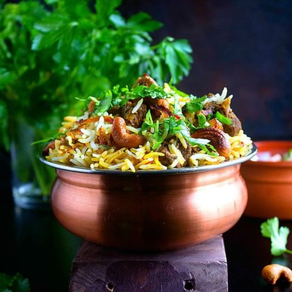

BEEF BIRYANI

BEEF BIRYANI
One pot beef biryani infused with classic pakistan spices.
| Prep Time |
Cook Time |
Total Time |
| 20 minutes |
1 hour
15 minutes |
1 hour
35 minutes |
INGREDIENTS
RICE :
2 cups basmati rice
1 tbsp oil
1 dried bay leaf
2 cardamom pods
2 cloves
1 cinnamon stick
10 cups water
Juice of 1 lemon
Salt to tast
FRIED ONIONS :
2 tbsp oil
2 cups sliced white onions
FRIED RAISINS:
1 tbsp ghee
1/4 cup raisins
FRIED CASHEW NUTS:
1 tbsp ghee
1/4 cup cashew nuts
SAFFRON MILK:
1 tsp saffron
2 tbsp lukewarm milk
BEEF MIXTURE:
2 dried bay leaves
2 dried bay leaves
4 cardamom pods
1 tsp black cumin seeds
1 tsp fennel seeds
1 cinnamon stick
1 tbsp ghee
1 tbsp oil
1 cup sliced red onions
1 tbsp minced ginger (ginger paste)
1 tbsp minced garlic (garlic paste)
2 tsp green chili paste
1/2 tsp ground turmeric (turmeric powder)
2 tsp ground coriander (coriander powder)
2 tsp garam masala
1-2 tsp red chili powder
2 tomatoes, chopped
1 kg beef, cut into medium-sized pieces
1/4 cup yogurt
1/4 cup yogurt
1/4 cup yogurt
1/4 cup yogurt
LAYERING BIRYANI:
2 tbsp ghee
2 tsp rose water
4 tbsp coriander (cilantro) and mint leaves
INSTRUCTIONS
COOK RICE:
- Rinse rice under cold running water. Soak for about 20 minutes. Drain. Set aside
- Heat oil in a large saucepan over medium-high heat. Add bay leaf,
cardamom, cinnamon and cloves. Stir fry for few seconds. Add water. Bring to boil.
Add rice and lemon juice. Season with salt. Stir gently. Bring to boil.
Reduce heat to medium-low and simmer until rice is tender. Drain. Set aside.
FRIED ONIONS: